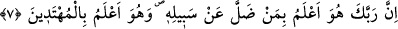
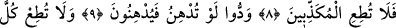
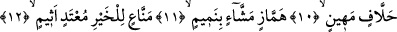
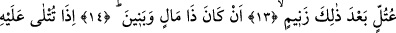
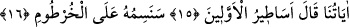

HAKİKATİ YALAN SAYANLARA
BOYUN EĞME!
7. Doğrusu Rabbin, kendi yolundan sapan kişiyi en iyi bilendir, hidâyete erenleri
de en iyi bilen O’dur.
8. O hâlde, (hakîkati) yalan sayanlara boyun eğme!
9. Onlar isterler ki, sen yumuşak davranasın da onlar da sana yumuşak
davransınlar.
10. (Rasûlüm!) Alabildiğine yemin eden, aşağılık kimselere sakın boyun eğme.
11. Dâima kusur arayıp kınayan, durmadan lâf götürüp getiren,
12. İyiliği hep engelleyen, mütecâviz, günaha dadanmış,
13. Kaba ve haşin, bütün bunlardan sonra bir de soysuzlukla damgalanmış
kimselerden hiçbirine,
14. Mal ve oğulları vardır diye (sakın boyun eğme.)
15. Ona âyetlerimiz okunduğu zaman o, «Öncekilerin masalları!» der.
16. Biz yakında onun burnuna damga vuracağız (kibirini kırıp rezil edeceğiz).
“Doğrusu Rabbin” iki dünya mutluluğuna götüren “kendi yolundan sapan kişiyi,”
ebedî bedbahtlığa yönelik olan sapıklık çölünde yolunu kaybeden kişiyi “en iyi
bilendir.” İşte fayda ile zararı birbirinden ayıramayan, âyetin deyimiyle, “mecnûn”,
yâni deli budur. Bu kişi yararlı ile zararlıyı ayıramaz. Tam tersine zararı yarar sayıp
emreder. Yararı da zarar görüp bundan uzak durur. “Hidâyete” onun yoluna “erenleri
de en iyi bilen O’dur.” Her türlü matlûbu elde edenleri, her türlü sakıncalı şeyden
kurtulanları en iyi bilen O’dur. Bunlar akıllı kimselerdir. Allah Teâlâ bu iki zümreden
her birine hak ettikleri cezâ ve sevâbı verecektir.
Bu âyet-i kerîmede, gerçekte mecnûn olanın Allah’a itâat edenin değil de O’na karşı
gelenin olduğuna işâret vardır. Yine bu âyet-i kerîmede, dünya sevgisi ve onun
şehvetlerine düşkünlük sebebiyle Mevlâ’nın huzûruna giden yolu bırakıp yolunu şaşıran
sapığa ve inâyet-i ezelîye ve hidâyet-i ebediyenin nûru sâyesinde tevhid ve vahdet